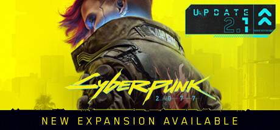

Cyberpunk 2077

Cyberpunk 2077 é um jogo de RPG de ação desenvolvido pela CD Projekt. Ambientado em Night City, um mundo aberto futurista, os jogadores assumem o papel de V, um mercenário em busca de um implante que concede imortalidade. Com escolhas significativas, narrativa envolvente e um vasto ambiente urbano, Cyberpunk 2077 promete uma experiência única e imersiva.
Requisitos Mínimos
| SO | Windows 7 (64-bit) |
|---|---|
| Processador | Intel Core i5-3570K / AMD FX-8310 |
| Memória | 8 GB RAM |
| Placa de vídeo | NVIDIA GTX 780 3GB / AMD Radeon RX 470 |
| Armazenamento | 70 GB disponíveis |
Requisitos Recomendados
| Sistema Operativo | Windows 10 (64-bit) |
|---|---|
| Processador | Intel Core i7-4790 / AMD Ryzen 3 3200G |
| Memória | 12 GB RAM |
| Placa de vídeo | NVIDIA GTX 1060 6GB / AMD Radeon R9 Fury |
| Armazenamento | 70 GB disponíveis |